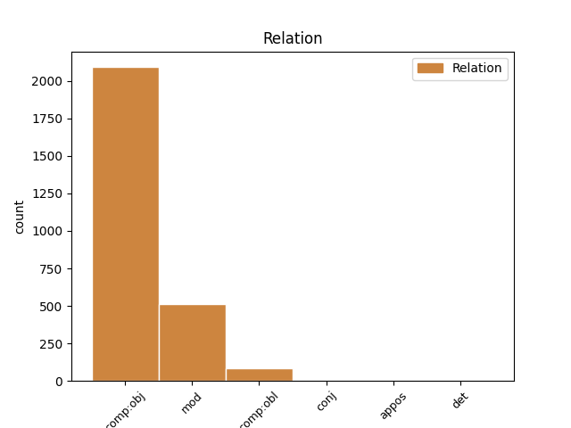
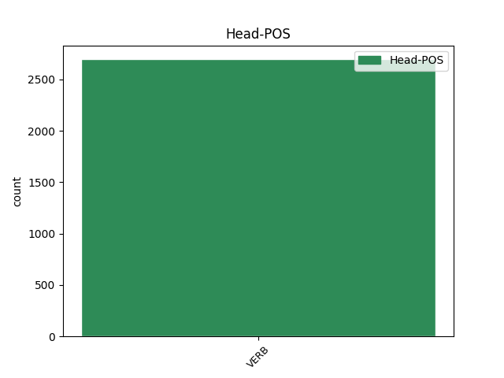
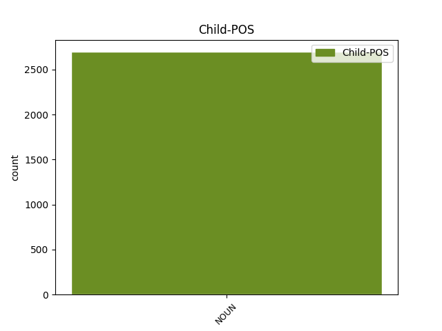

Distribution of features within this leaf



Agreement Rules sorted by frequency.
- When the dependent token is the direct object complements(comp:obj) of the head token, and the head token is VERB and the dependent token is NOUN.
1 ἐγὼ _ _ _ _ 0 _ _ _
2 δὲ _ _ _ _ 0 _ _ _
3 λαοὺς λαός NOUN n-p---ma- Case=Acc|Gender=Masc|Number=Plur 4 comp:obj _ _
4 συγκαλῶν συγκαλέω VERB v-sppamn- Case=Nom|Gender=Masc|Number=Sing|Tense=Pres|VerbForm=Part|Voice=Act 0 _ _ _
5 ἐγχωρίους _ _ _ _ 0 _ _ _
6 στείχω _ _ _ _ 0 _ _ _
7 , _ _ _ _ 0 _ _ _
8 τὸ _ _ _ _ 0 _ _ _
9 κοινὸν _ _ _ _ 0 _ _ _
10 ὡς _ _ _ _ 0 _ _ _
11 ἂν _ _ _ _ 0 _ _ _
12 εὐμενὲς _ _ _ _ 0 _ _ _
13 τιθῶ _ _ _ _ 0 _ _ _
14 · _ _ _ _ 0 _ _ _
1 μή _ _ _ _ 0 _ _ _
2 τι _ _ _ _ 0 _ _ _
3 τλῇς _ _ _ _ 0 _ _ _
4 τὰν _ _ _ _ 0 _ _ _
5 ἱκέτιν _ _ _ _ 0 _ _ _
6 εἰσιδεῖν _ _ _ _ 0 _ _ _
7 ἀπὸ _ _ _ _ 0 _ _ _
8 βρετέων _ _ _ _ 0 _ _ _
9 βίᾳ βία NOUN n-s---fd- Case=Dat|Gender=Fem|Number=Sing 11 mod _ _
10 δίκας _ _ _ _ 0 _ _ _
11 ἀγομέναν ἄγω VERB v-sppefa- Case=Acc|Gender=Fem|Number=Sing|Tense=Pres|VerbForm=Part|Voice=Mid 0 _ _ _
12 ἱππηδὸν _ _ _ _ 0 _ _ _
13 ἀμπύκων _ _ _ _ 0 _ _ _
14 , _ _ _ _ 0 _ _ _
15 πολυμίτων _ _ _ _ 0 _ _ _
16 πέπλων _ _ _ _ 0 _ _ _
17 τ̓ _ _ _ _ 0 _ _ _
18 ἐπιλαβὰς _ _ _ _ 0 _ _ _
19 ἐμῶν _ _ _ _ 0 _ _ _
20 . _ _ _ _ 0 _ _ _
1 ἐγὼ _ _ _ _ 0 _ _ _
2 δ̓ _ _ _ _ 0 _ _ _
3 ἂν _ _ _ _ 0 _ _ _
4 οὐ _ _ _ _ 0 _ _ _
5 κραίνοιμ̓ _ _ _ _ 0 _ _ _
6 ὑπόσχεσιν _ _ _ _ 0 _ _ _
7 πάρος _ _ _ _ 0 _ _ _
8 , _ _ _ _ 0 _ _ _
9 ἀστοῖς ἀστός NOUN n-p---md- Case=Dat|Gender=Masc|Number=Plur 13 comp:obl _ _
10 δὲ _ _ _ _ 0 _ _ _
11 πᾶσι _ _ _ _ 0 _ _ _
12 τῶνδε _ _ _ _ 0 _ _ _
13 κοινώσας κοινόω VERB v-sapamn- Case=Nom|Gender=Masc|Number=Sing|Tense=Past|VerbForm=Part|Voice=Act 0 _ _ _
14 πέρι _ _ _ _ 0 _ _ _
15 . _ _ _ _ 0 _ _ _
1 οὗτος _ _ _ _ 0 _ _ _
2 μὲν _ _ _ _ 0 _ _ _
3 οὖν _ _ _ _ 0 _ _ _
4 τῆς _ _ _ _ 0 _ _ _
5 πόλεως _ _ _ _ 0 _ _ _
6 κατειληφὼς _ _ _ _ 0 _ _ _
7 τὴν _ _ _ _ 0 _ _ _
8 ὀνομαζομένην ὀνομάζω VERB v-sppefa- Case=Acc|Gender=Fem|Number=Sing|Tense=Pres|VerbForm=Part|Voice=Mid 0 _ _ _
9 Ἀχραδινὴν _ _ _ _ 0 _ _ _
10 καὶ _ _ _ _ 0 _ _ _
11 τὴν _ _ _ _ 0 _ _ _
12 Νῆσον νῆσος NOUN n-s---fa- Case=Acc|Gender=Fem|Number=Sing 8 conj _ _
13 ὀχυρὰν _ _ _ _ 0 _ _ _
14 οὖσαν _ _ _ _ 0 _ _ _
15 , _ _ _ _ 0 _ _ _
16 καὶ _ _ _ _ 0 _ _ _
17 ἐκ _ _ _ _ 0 _ _ _
18 τούτων _ _ _ _ 0 _ _ _
19 ὁρμώμενος _ _ _ _ 0 _ _ _
20 , _ _ _ _ 0 _ _ _
21 διεπολέμει _ _ _ _ 0 _ _ _
22 πρὸς _ _ _ _ 0 _ _ _
23 τοὺς _ _ _ _ 0 _ _ _
24 ἀφεστῶτας _ _ _ _ 0 _ _ _
25 . _ _ _ _ 0 _ _ _
1 τοσαῦτα _ _ _ _ 0 _ _ _
2 εἶπας _ _ _ _ 0 _ _ _
3 πρῶτον _ _ _ _ 0 _ _ _
4 μὲν _ _ _ _ 0 _ _ _
5 τῶν _ _ _ _ 0 _ _ _
6 Μάγων _ _ _ _ 0 _ _ _
7 τοὺς _ _ _ _ 0 _ _ _
8 ὀνειροπόλους _ _ _ _ 0 _ _ _
9 , _ _ _ _ 0 _ _ _
10 οἵ _ _ _ _ 0 _ _ _
11 μιν _ _ _ _ 0 _ _ _
12 ἀνέγνωσαν _ _ _ _ 0 _ _ _
13 μετεῖναι _ _ _ _ 0 _ _ _
14 τὸν _ _ _ _ 0 _ _ _
15 Κῦρον _ _ _ _ 0 _ _ _
16 , _ _ _ _ 0 _ _ _
17 τούτους _ _ _ _ 0 _ _ _
18 ἀνεσκολόπισε _ _ _ _ 0 _ _ _
19 , _ _ _ _ 0 _ _ _
20 μετὰ _ _ _ _ 0 _ _ _
21 δὲ _ _ _ _ 0 _ _ _
22 ὥπλισε _ _ _ _ 0 _ _ _
23 τοὺς _ _ _ _ 0 _ _ _
24 ὑπολειφθέντας ὑπολείπω VERB v-pappma- Case=Acc|Gender=Masc|Number=Plur|Tense=Past|VerbForm=Part|Voice=Pass 0 _ _ _
25 ἐν _ _ _ _ 0 _ _ _
26 τῷ _ _ _ _ 0 _ _ _
27 ἄστεϊ _ _ _ _ 0 _ _ _
28 τῶν _ _ _ _ 0 _ _ _
29 Μήδων _ _ _ _ 0 _ _ _
30 , _ _ _ _ 0 _ _ _
31 νέους _ _ _ _ 0 _ _ _
32 τε _ _ _ _ 0 _ _ _
33 καὶ _ _ _ _ 0 _ _ _
34 πρεσβύτας _ _ _ _ 0 _ _ _
35 ἄνδρας ἀνήρ NOUN n-p---ma- Case=Acc|Gender=Masc|Number=Plur 24 appos _ SpaceAfter=No
36 . _ _ _ _ 0 _ _ _
Disagree Examples:
1 ὅσοι _ _ _ _ 0 _ _ _
2 τε _ _ _ _ 0 _ _ _
3 Πόντου _ _ _ _ 0 _ _ _
4 τερμόνων _ _ _ _ 0 _ _ _
5 τ̓ _ _ _ _ 0 _ _ _
6 Ἀτλαντικῶν _ _ _ _ 0 _ _ _
7 ναίουσιν _ _ _ _ 0 _ _ _
8 εἴσω _ _ _ _ 0 _ _ _
9 φῶς φάος NOUN n-s---na- Case=Acc|Gender=Neut|Number=Sing 10 comp:obj _ _
10 ὁρῶντες ὁράω VERB v-pppamn- Case=Nom|Gender=Masc|Number=Plur|Tense=Pres|VerbForm=Part|Voice=Act 0 _ _ _
11 ἡλίου _ _ _ _ 0 _ _ _
12 , _ _ _ _ 0 _ _ _
13 τοὺς _ _ _ _ 0 _ _ _
14 μὲν _ _ _ _ 0 _ _ _
15 σέβοντας _ _ _ _ 0 _ _ _
16 τἀμὰ _ _ _ _ 0 _ _ _
17 πρεσβεύω _ _ _ _ 0 _ _ _
18 κράτη _ _ _ _ 0 _ _ _
19 , _ _ _ _ 0 _ _ _
20 σφάλλω _ _ _ _ 0 _ _ _
21 δ̓ _ _ _ _ 0 _ _ _
22 ὅσοι _ _ _ _ 0 _ _ _
23 φρονοῦσιν _ _ _ _ 0 _ _ _
24 εἰς _ _ _ _ 0 _ _ _
25 ἡμᾶς _ _ _ _ 0 _ _ _
26 μέγα _ _ _ _ 0 _ _ _
27 . _ _ _ _ 0 _ _ _
1 ὅσοι _ _ _ _ 0 _ _ _
2 τε _ _ _ _ 0 _ _ _
3 Πόντου _ _ _ _ 0 _ _ _
4 τερμόνων _ _ _ _ 0 _ _ _
5 τ̓ _ _ _ _ 0 _ _ _
6 Ἀτλαντικῶν _ _ _ _ 0 _ _ _
7 ναίουσιν _ _ _ _ 0 _ _ _
8 εἴσω _ _ _ _ 0 _ _ _
9 φῶς _ _ _ _ 0 _ _ _
10 ὁρῶντες _ _ _ _ 0 _ _ _
11 ἡλίου _ _ _ _ 0 _ _ _
12 , _ _ _ _ 0 _ _ _
13 τοὺς _ _ _ _ 0 _ _ _
14 μὲν _ _ _ _ 0 _ _ _
15 σέβοντας σέβω VERB v-pppama- Case=Acc|Gender=Masc|Number=Plur|Tense=Pres|VerbForm=Part|Voice=Act 0 _ _ _
16 τἀμὰ _ _ _ _ 0 _ _ _
17 πρεσβεύω _ _ _ _ 0 _ _ _
18 κράτη κράτος NOUN n-p---na- Case=Acc|Gender=Neut|Number=Plur 15 comp:obj _ SpaceAfter=No
19 , _ _ _ _ 0 _ _ _
20 σφάλλω _ _ _ _ 0 _ _ _
21 δ̓ _ _ _ _ 0 _ _ _
22 ὅσοι _ _ _ _ 0 _ _ _
23 φρονοῦσιν _ _ _ _ 0 _ _ _
24 εἰς _ _ _ _ 0 _ _ _
25 ἡμᾶς _ _ _ _ 0 _ _ _
26 μέγα _ _ _ _ 0 _ _ _
27 . _ _ _ _ 0 _ _ _
1 νεανίσκῳ _ _ _ _ 0 _ _ _
2 γὰρ _ _ _ _ 0 _ _ _
3 τὴν _ _ _ _ 0 _ _ _
4 πᾶσαν _ _ _ _ 0 _ _ _
5 ἀρετὴν ἀρετή NOUN n-s---fa- Case=Acc|Gender=Fem|Number=Sing 6 comp:obj _ _
6 ἔχοντι ἔχω VERB v-sppamd- Case=Dat|Gender=Masc|Number=Sing|Tense=Pres|VerbForm=Part|Voice=Act 0 _ _ _
7 τοῦτο _ _ _ _ 0 _ _ _
8 μόνον _ _ _ _ 0 _ _ _
9 τὸ _ _ _ _ 0 _ _ _
10 ἁμάρτημα _ _ _ _ 0 _ _ _
11 προσόν _ _ _ _ 0 _ _ _
12 , _ _ _ _ 0 _ _ _
13 ὅτι _ _ _ _ 0 _ _ _
14 οὐκ _ _ _ _ 0 _ _ _
15 ἐτίμα _ _ _ _ 0 _ _ _
16 τὴν _ _ _ _ 0 _ _ _
17 Ἀφροδίτην _ _ _ _ 0 _ _ _
18 , _ _ _ _ 0 _ _ _
19 αἴτιον _ _ _ _ 0 _ _ _
20 ἐγένετο _ _ _ _ 0 _ _ _
21 τοῦ _ _ _ _ 0 _ _ _
22 ὀλέθρου _ _ _ _ 0 _ _ _
23 · _ _ _ _ 0 _ _ _
1 τὸν _ _ _ _ 0 _ _ _
2 δὲ _ _ _ _ 0 _ _ _
3 γυναικείων _ _ _ _ 0 _ _ _
4 μελέων _ _ _ _ 0 _ _ _
5 πλέξαντα πλέκω VERB v-sapama- Case=Acc|Gender=Masc|Number=Sing|Tense=Past|VerbForm=Part|Voice=Act 0 _ _ _
6 πότ̓ _ _ _ _ 0 _ _ _
7 ᾠδὰς ἀοιδή NOUN n-p---fa- Case=Acc|Gender=Fem|Number=Plur 5 comp:obj _ _
8 ἡδὺν _ _ _ _ 0 _ _ _
9 Ἀνακρείοντα _ _ _ _ 0 _ _ _
10 Τέως _ _ _ _ 0 _ _ _
11 εἰς _ _ _ _ 0 _ _ _
12 Ἑλλάδ̓ _ _ _ _ 0 _ _ _
13 ἀνῆγεν _ _ _ _ 0 _ _ _
14 , _ _ _ _ 0 _ _ _
15 συμποσίων _ _ _ _ 0 _ _ _
16 ἐρέθισμα _ _ _ _ 0 _ _ _
17 , _ _ _ _ 0 _ _ _
18 γυναικῶν _ _ _ _ 0 _ _ _
19 ἠπερόπευμα _ _ _ _ 0 _ _ _
20 , _ _ _ _ 0 _ _ _
21 αὐλῶν _ _ _ _ 0 _ _ _
22 ἀντίπαλον _ _ _ _ 0 _ _ _
23 , _ _ _ _ 0 _ _ _
24 φιλοβάρβιτον _ _ _ _ 0 _ _ _
25 , _ _ _ _ 0 _ _ _
26 ἡδύν _ _ _ _ 0 _ _ _
27 , _ _ _ _ 0 _ _ _
28 ἄλυπον _ _ _ _ 0 _ _ _
29 . _ _ _ _ 0 _ _ _
1 οὒ _ _ _ _ 0 _ _ _
2 ποτέ _ _ _ _ 0 _ _ _
3 σου _ _ _ _ 0 _ _ _
4 φιλότης _ _ _ _ 0 _ _ _
5 γηράσεται _ _ _ _ 0 _ _ _
6 οὐδὲ _ _ _ _ 0 _ _ _
7 θανεῖται _ _ _ _ 0 _ _ _
8 , _ _ _ _ 0 _ _ _
9 ἒς _ _ _ _ 0 _ _ _
10 τ̓ _ _ _ _ 0 _ _ _
11 ἂν _ _ _ _ 0 _ _ _
12 ὕδωρ _ _ _ _ 0 _ _ _
13 οἴνῳ _ _ _ _ 0 _ _ _
14 συμμιγνύμενον _ _ _ _ 0 _ _ _
15 κυλίκεσσι _ _ _ _ 0 _ _ _
16 παῖς _ _ _ _ 0 _ _ _
17 διαπομπεύῃ _ _ _ _ 0 _ _ _
18 , _ _ _ _ 0 _ _ _
19 προπόσεις πρόποσις NOUN n-p---fa- Case=Acc|Gender=Fem|Number=Plur 22 comp:obj _ _
20 ἐπὶ _ _ _ _ 0 _ _ _
21 δεξιὰ _ _ _ _ 0 _ _ _
22 νωμῶν νωμάω VERB v-sppamn- Case=Nom|Gender=Masc|Number=Sing|Tense=Pres|VerbForm=Part|Voice=Act 0 _ _ _
23 , _ _ _ _ 0 _ _ _
24 παννυχίδας _ _ _ _ 0 _ _ _
25 θ̓ _ _ _ _ 0 _ _ _
26 ἱερὰς _ _ _ _ 0 _ _ _
27 θήλεις _ _ _ _ 0 _ _ _
28 χοροὶ _ _ _ _ 0 _ _ _
29 ἀμφιέπωσιν _ _ _ _ 0 _ _ _
30 , _ _ _ _ 0 _ _ _
31 πλάστιγξ _ _ _ _ 0 _ _ _
32 θ̓ _ _ _ _ 0 _ _ _
33 ἡ _ _ _ _ 0 _ _ _
34 χαλκοῦ _ _ _ _ 0 _ _ _
35 θυγάτηρ _ _ _ _ 0 _ _ _
36 ἐπ̓ _ _ _ _ 0 _ _ _
37 ἄκραισι _ _ _ _ 0 _ _ _
38 καθίζῃ _ _ _ _ 0 _ _ _
39 κοττάβου _ _ _ _ 0 _ _ _
40 ὑψηλαῖς _ _ _ _ 0 _ _ _
41 κορυφαῖς _ _ _ _ 0 _ _ _
42 Βρομίου _ _ _ _ 0 _ _ _
43 ψακάδεσσιν _ _ _ _ 0 _ _ _
44 . _ _ _ _ 0 _ _ _